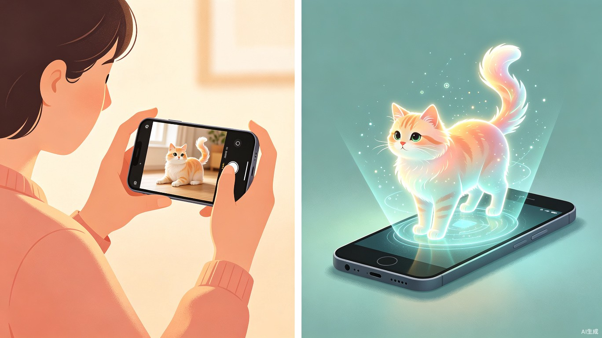
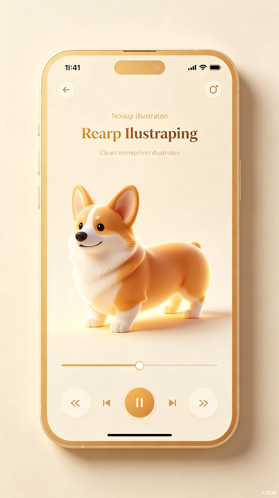

基于宠物图片生成3D模型的纪念小程序
用科技留存温暖回忆，让爱以另一种方式延续
中国宠物经济持续高速增长，2025年市场规模已突破3000亿元。与此同时，宠物离世带来的情感空缺正成为越来越多养宠家庭需要面对的课题。据行业调研，超过68%的宠物主人在宠物去世后会经历明显的悲伤期，其中约40%希望有一种仪式化的方式来纪念与宠物共度的时光。
现有的纪念方式主要集中在：实体墓碑、骨灰饰品、照片相册、手绘肖像等。这些方式各有局限——实体纪念物受空间和成本约束，照片和手绘则难以还原宠物的立体形态与神态。
2024至2026年间，3D生成技术实现了跨越式发展。3D Gaussian Splatting、Hunyuan3D-1、DreamGaussian 等开源方案使得从少量照片生成高质量3D模型成为可能。这意味着：
让每一个逝去的毛孩子，都能以立体的、可触碰的数字形态，继续陪伴在主人身边。不是替代记忆，而是为思念提供一个温暖的栖所。
年龄：25-40岁
特征：将宠物视为家庭成员，情感投入深，有较强的纪念意愿
痛点：思念无处安放，现有纪念方式不够个性化、缺乏互动感
使用频次：低频但高情感浓度，特殊日期会反复访问
年龄：22-35岁
特征：愿意为宠物尝试新鲜事物，乐于分享
动机：提前为宠物建立数字档案，或单纯体验3D生成技术
价值：口碑传播、社交分享，带动自然增长
场景一：宠物离世后的纪念 — 用户在宠物离世后上传生前照片，生成3D模型，在小程序中建立专属纪念空间。在宠物生日、忌日等特殊时刻打开，360度端详宠物的模样，留下寄语。
场景二：生前预建档 — 用户为健康的宠物提前生成3D模型，作为一份特别的"数字档案"。这种方式降低了产品的心理门槛，也扩大了潜在用户群。
场景三：社交分享 — 用户将生成的3D模型以短视频或交互链接形式分享至朋友圈，引发共鸣和讨论，形成自然传播。
| 竞品 | 定位 | 核心功能 | 不足 |
|---|---|---|---|
| Rainbow Bridge | 海外宠物纪念平台 | 在线纪念馆、留言墙、虚拟蜡烛 | 无3D能力；国内访问不便；无小程序 |
| 宠物纪念类小程序（多款） | 国内宠物纪念 | 相册、时间线、留言 | 功能同质化严重，缺乏差异化体验 |
| 3D建模定制服务 | 手工/半自动3D建模 | 高精度3D打印模型 | 价格高昂（500-3000元），周期长（1-2周） |
| 产品/技术 | 技术路径 | 可借鉴点 |
|---|---|---|
| Hunyuan3D-1 | 图像到3D生成 | 开源、推理速度快、支持纹理生成 |
| DreamGaussian | 3D Gaussian Splatting | 少样本输入（1-3张）、30分钟内收敛 |
| Luma AI | NeRF/3DGS 手机端 | 产品化程度高，用户体验流畅 |
现有市场存在明显的空白：没有任何一款产品同时做到"情感化纪念"与"3D可交互体验"的结合。高端3D打印服务价格门槛过高，纯软件纪念产品又缺乏立体感和沉浸感。AI 3D生成技术的成熟恰好填补了这一断层。
星伴是一款面向宠物主人的情感纪念小程序。用户上传宠物照片，AI生成可交互的3D模型，在小程序内建立专属的"星伴空间"，以温暖的方式留存与宠物之间的回忆。
MVP阶段聚焦"照片上传 → 3D生成 → 模型展示"的核心闭环，不做社交、不做商城、不做复杂运营。具体包含：
明确不做（MVP阶段）：
| # | 模块 | 功能描述 | 优先级 |
|---|---|---|---|
| 1 | 首页 | 品牌氛围展示，入口引导，已创建档案快捷访问 | P0 |
| 2 | 档案创建 | 填写宠物基础信息（名字、品种、生日、性别），上传1-5张照片 | P0 |
| 3 | 照片预处理 | 照片质量检测、主体裁剪建议、背景处理提示 | P0 |
| 4 | 3D生成 | 异步调用AI模型生成3D模型，进度实时推送，生成结果通知 | P0 |
| 5 | 3D展示 | threejs-miniprogram加载glb模型，支持手势旋转、缩放、自动旋转播放 | P0 |
| 6 | 纪念空间 | 宠物信息卡、主人寄语、时光轴（选填）、背景音乐（选填） | P1 |
| 7 | 个人中心 | 我的档案列表、生成历史、使用指南、意见反馈 | P1 |
| 8 | 分享 | 生成3D模型短视频/海报分享至朋友圈，附带小程序跳转链接 | P1 |
业务逻辑：用户进入创建页 → 填写宠物名字（必填，2-10字符）→ 选择物种（猫/狗/其他，必填）→ 选择品种（从预设列表选择，支持搜索）→ 填写生日（选填）→ 上传照片（1-5张，必填至少1张）。
交互逻辑：点击"添加照片"唤起微信相册选择 → 选择后展示缩略图列表 → 每张图可删除或设为封面 → 点击"开始生成"进入确认页 → 二次确认后提交。
规则约束：照片格式限制为 JPG/PNG，单张不超过10MB，建议尺寸不低于 512x512px。系统对每张照片进行质量评分：清晰度、主体占比、光照条件。评分过低时提示"这张照片可能效果不佳，建议更换"。
业务逻辑：提交后任务进入队列 → 后端调用AI生成服务 → 生成完成后推送微信订阅消息 → 用户点击消息进入3D展示页。
状态流转：已提交 → 排队中 → 生成中（展示进度条与预估时间） → 生成成功 → 可查看；或 生成失败 → 提示原因与重试入口。
异常处理：生成超时（>45分钟）自动标记失败并退款/补偿；生成质量不达标（PSNR<25）触发重试机制，最多重试2次；连续失败人工介入处理。
业务逻辑：使用 threejs-miniprogram 加载 glb/gltf 格式模型文件，在小程序 Canvas 上渲染。
交互逻辑：单指拖拽旋转视角，双指捏合缩放，双击重置视角。提供"自动旋转"开关（默认开启，速度缓慢）。底部提供视角预设按钮：正面、侧面、俯视。
边界情况：模型加载失败时展示"模型暂时无法加载"提示与重试按钮；低端机型帧率不足时自动降低渲染精度（减少面数、关闭阴影）。


flowchart TD
A[用户进入小程序] --> B{是否有档案?}
B -->|否| C[首页引导]
B -->|是| D[档案列表]
C --> E[创建档案]
D --> E
E --> F[填写信息+上传照片]
F --> G[照片质量检测]
G --> H{检测通过?}
H -->|否| I[提示优化建议]
I --> F
H -->|是| J[提交生成任务]
J --> K[异步生成3D模型]
K --> L{生成成功?}
L -->|是| M[3D模型展示页]
L -->|否| N[失败提示+重试]
N --> J
M --> O[纪念空间]
M --> P[分享]
flowchart TB
subgraph "微信小程序端"
A1[首页/档案页]
A2[照片上传]
A3[3D展示
threejs-miniprogram]
A4[纪念空间]
end
subgraph "后端服务"
B1[API Gateway]
B2[用户服务]
B3[档案管理服务]
B4[任务调度服务]
end
subgraph "AI生成集群"
C1[3D生成引擎
Hunyuan3D-1/DreamGaussian]
C2[模型格式转换
ply->glb]
C3[纹理优化]
end
subgraph "存储层"
D1[(原始照片存储)]
D2[(3D模型存储)]
D3[(用户数据)]
end
A1 --> B1
A2 --> B1
A3 --> D2
B1 --> B2
B1 --> B3
B1 --> B4
B4 --> C1
C1 --> C2 --> C3
C3 --> D2
B3 --> D1
B3 --> D3
小程序端采用 threejs-miniprogram 进行3D渲染。该方案是 Three.js 的官方微信小程序适配版本，将 WebGL API 转换为小程序 Canvas 接口，支持：
模型文件存储于对象存储（如腾讯云COS），通过预签名URL访问。为提升加载速度，模型需经过压缩处理：使用 Draco 压缩降低 glb 文件体积，目标控制在 5MB 以内。
| 方案 | 输入要求 | 生成时长 | 输出质量 | 显存需求 | 推荐场景 |
|---|---|---|---|---|---|
| Hunyuan3D-1 | 单张图像 | 约10秒 | 良好，纹理清晰 | 8GB+ | 首选方案 |
| DreamGaussian | 1-3张图像 | 20-30分钟 | 优秀，细节丰富 | 8-16GB | 高精度需求 |
| Zero123++ | 单张图像 | 1-2秒/视角 | 中等，视角有漂移 | 6GB+ | 快速预览 |
| 3DFuse | 图像+姿态标签 | 2-3小时 | 优秀，结构精准 | 12GB+ | 专业场景 |
综合考量生成速度、成本、质量与工程复杂度，MVP阶段推荐以 Hunyuan3D-1 作为主力生成引擎。理由如下：
Hunyuan3D-1 对侧面/背面结构的推断能力有限。若用户上传多张照片（含侧面），可切换至 DreamGaussian 进行优化训练，获得更完整的360度模型。系统应根据用户上传的照片数量自动选择最优方案。
| 维度 | 评估指标 | MVP合格线 | 评估方式 |
|---|---|---|---|
| 几何结构 | 姿态合理性、比例一致性 | 无严重扭曲 | 人工抽检 + 自动mesh检测 |
| 纹理保真 | PSNR、SSIM 对比输入图 | PSNR >= 25dB | 自动计算 |
| 渲染效果 | 移动端帧率、加载时长 | 帧率 >= 30fps, 加载 <= 5s | 真机测试 |
| 用户满意度 | NPS评分、"像不像"反馈 | NPS >= 40 | 问卷+行为数据 |
| 指标 | 说明 | MVP目标 |
|---|---|---|
| 照片上传完成率 | 开始创建到成功提交的转化率 | >= 75% |
| 3D生成成功率 | 任务成功完成的比例 | >= 90% |
| 模型加载成功率 | 用户端成功加载3D模型的比例 | >= 95% |
| 平均生成等待时长 | 用户感知的等待时间 | <= 15分钟 |
| 分享率 | 生成后分享的用户占比 | >= 15% |
核心事件：首页访问、创建页进入、照片上传（张数、质量评分）、生成提交、生成成功/失败、3D模型加载、交互行为（旋转/缩放/自动播放）、纪念空间访问、分享点击。
完成照片上传、3D生成、模型展示、纪念空间的核心功能。目标验证"用户是否愿意上传照片并等待生成"、"生成结果是否达到情感预期"。采用邀请码机制控制用户量，收集早期反馈。
增加分享海报/短视频功能、支持多宠物档案、优化3D加载性能、增加更多交互视角。目标是通过社交分享实现自然增长。
增加宠物时光轴（照片+事件）、生日/忌日暖心提醒、纪念空间背景音乐、主人日记功能。让产品从"工具"向"情感陪伴"升级。
探索AR摄像头将3D模型投射到真实场景、对接3D打印服务商提供实体纪念物。商业化试水阶段。
| 风险 | 概率 | 影响 | 应对策略 |
|---|---|---|---|
| 3D生成效果不达预期 | 中 | 高 | 设置质量阈值自动过滤差结果；人工审核首批用户生成内容；明确告知用户AI生成的局限性 |
| 生成服务成本过高 | 中 | 中 | MVP采用免费+限次策略；监控单用户成本；后续引入付费点或会员体系 |
| 用户情感期望管理 | 高 | 高 | 文案强调"纪念"而非"复原"；提供退款/重试机制；建立用户反馈快速响应通道 |
| 低端机型3D渲染卡顿 | 高 | 中 | 多档位渲染精度自动适配；提供2D照片回退查看；模型面数控制在5万以内 |
| 数据隐私与合规 | 低 | 高 | 用户照片仅用于生成，明确隐私政策；数据存储在境内；提供删除功能 |
假设一：用户愿意为逝去的宠物花费15-30分钟等待3D模型生成。
验证方式：MVP阶段监测"提交生成率"和"生成成功后7日回访率"。
假设二：AI生成的3D模型质量足以唤起用户的情感共鸣。
验证方式：首批100名用户问卷调研，核心问题"看到3D模型时的感受"。
假设三：用户有分享意愿，能形成自然传播。
验证方式：Phase 2监测分享率与通过分享进入的新用户占比。